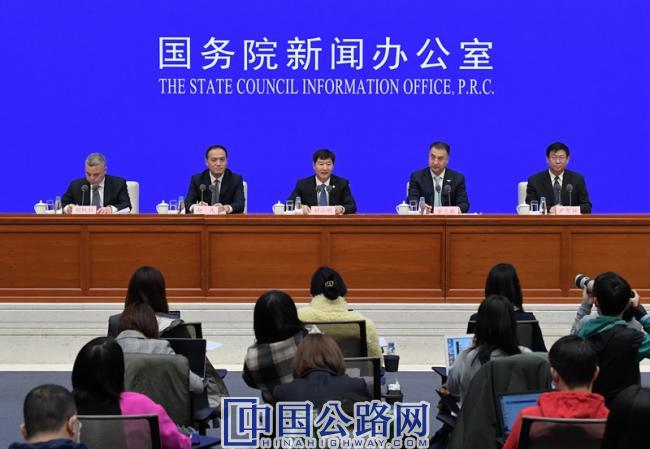
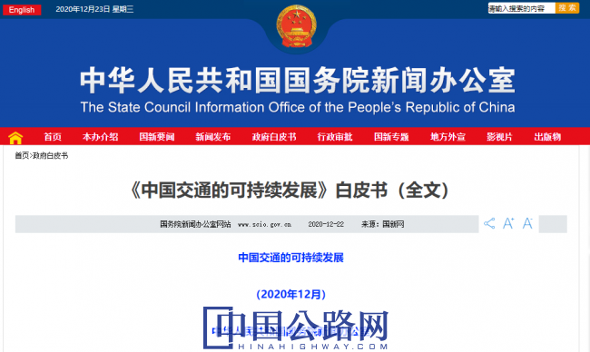

微官网
微官网
2020-12-23 中国经济网
22日，国务院新闻办公室发布《中国交通的可持续发展》白皮书，全面介绍了新时代中国交通发展成就，分享中国交通可持续发展的理念和实践，并指出中国正在从交通大国向交通强国迈进。

交通运输部副部长刘小明表示，交通运输是国民经济中基础性、先导性、战略性产业和重要的服务性行业，是推动可持续发展的重要支撑。党的十八大以来，中国交通发展取得历史性成就，已经建成了交通大国，正加快向交通强国迈进。
刘小明说，中国交通深入推进供给侧结构性改革，进入了高质量发展的新时代。基础设施方面，综合交通网络规模和质量实现跃升，有力服务和支撑了经济社会持续快速健康发展。
数据显示，截至2019年底，全国铁路营业里程13.9万公里，其中高铁超过3.5万公里，位居世界第一；公路里程501.3万公里，其中高速公路15万公里，跃居世界第一；生产性码头泊位2.3万个，其中万吨级及以上泊位数量2520个，内河航道通航里程12.7万公里，也是世界第一；民用航空颁证运输机场238个；全国油气长输管道总里程15.6万公里；邮路和快递服务网络总长度4085.9万公里，实现了乡乡设所、村村通邮。

此外，交通运输新业态新模式不断涌现。“互联网+”交通运输正在深刻改变着人们的出行方式。截至2019年底，网约车覆盖全国400多个城市，平台日均使用量达到2000万人次。共享单车有效解决了出行“最后一公里”难题，日均使用量约4570万人次。
白皮书指出，到2035年，基本建成交通强国。现代化综合交通体系基本形成，人民满意度明显提高，支撑国家现代化建设能力显著增强。拥有发达的快速网、完善的干线网、广泛的基础网，城乡区域交通协调发展达到新高度。基本形成都市区1小时通勤、城市群2小时通达、全国主要城市3小时覆盖的“全国123出行交通圈”和国内1天送达、周边国家2天送达、全球主要城市3天送达的“全球123快货物流圈”，旅客联程运输便捷顺畅，货物多式联运高效经济。智能、平安、绿色、共享交通发展水平明显提高，城市交通拥堵基本缓解，无障碍出行服务体系基本完善。
同时，交通科技创新体系基本建成，交通关键装备先进安全，人才队伍精良，市场环境优良。基本实现交通治理现代化。交通国际竞争力和影响力显著提升。交通运输全面适应人民日益增长的美好生活需要，为基本实现社会主义现代化提供有力支撑。